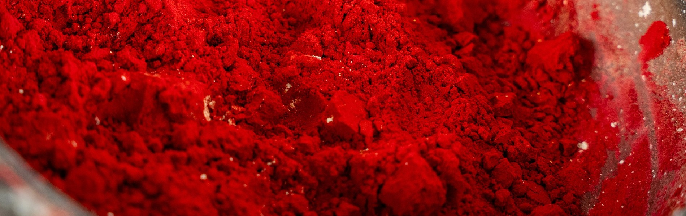

Vermilion
The Dragon's Blood
Origin
Vermilion is the synthetic form of cinnabar, a naturally occurring mercury sulfide mineral (HgS) found in volcanic and sedimentary deposits worldwide. The primary historical sources were the Hunan province of China and the Almadén mines in Spain—the latter exploited since Roman times and described by Theophrastus over 300 years before Christ.
Why these regions?
Cinnabar forms where mercury and sulfur meet under specific geological conditions—typically in hydrothermal veins near volcanic activity. The Almadén deposit is a volcanic-sedimentary formation, while Hunan's deposits are associated with mercury-rich ore bodies. The deep red color comes from the mineral's molecular structure, which absorbs all wavelengths except the deep scarlet that has captivated humanity for millennia.
History
The Chinese knew cinnabar as early as the 4th century BCE, using it for both painting and alchemy. To the alchemists, vermilion was magical—its color transformation from black to red during production mirrored the rubedo stage of the philosopher's stone, the final reddening that promised gold. The recipe reached Europe around the 8th century, likely through Arab alchemists like Jabir Ibn Hayyan. Theophilus, a Benedictine monk, described the dramatic process in the 12th century: sulfur and mercury sealed in a pot, buried in blazing coals, then the "crashing noise inside" as the elements united.
By the Medieval period, vermilion was comparable in price to gold, used sparingly in illuminated manuscripts. Venetian painters prized it as "the perfect imitation of the colour of blood". Cennino Cennini warned artists to buy it "ready-made in an unbroken lump", since apothecaries were known to adulterate the precious pigment with red lead or brick dust.
How Was It Made?
The alchemical process was deceptively simple: mercury and sulfur, combined under heat, produced a black compound (metacinnabar) that transformed into brilliant red vermilion. The careful heating was crucial. Theophilus described the sealed pot buried in coals, the crashing sound as mercury united with blazing sulfur. The resulting blackened lump was then ground with water, and as the grinding proceeded, the fiery red color developed. Medieval manuscripts recorded the color changes during production—first straw-colored smoke, then yellow, finally red "like vermilion". These observations weren't just practical; they fed into alchemical theory, where color change signaled deep-transformation of matter.
What Makes It Dangerous?
The danger is mercury. Vermilion's chemical composition is mercury sulfide (HgS). Mercury is a potent neurotoxin that accumulates in the body and can cause:
- Tremors and neurological damage
- Kidney failure
- Birth defects
- In extreme cases, death
The production process was exceptionally hazardous. Mercury vapors released during heating are invisible and odorless, but highly toxic. Medieval and Renaissance pigment makers rarely understood these dangers—they worked without masks, ventilation, or gloves. Even finished vermilion pigment posed risks. Historical sources note that artists who ground the pigment daily could absorb mercury through their skin. Modern safety guidelines classify vermilion as highly toxic and require strict handling protocols.
Artists Who Used Vermilion
-
- The Virgin and Child (mid-late 15th century).
- This anonymous work demonstrates the period's advances in oil painting, with the Virgin's cloak rendered in vermilion to signal both her high status and the enormous cost of the pigment. Red lead was likely added for intensity, with kermes or cochineal glazes creating depth in the folds.
-
- Cennino Cennini
- The Italian artist and writer didn't just use vermilion; he documented its use in Il Libro dell'Arte (late 1390s), advising artists on how to source it and warning against adulteration.
Famous Works Featuring Vermilion
-
- Medieval illuminated manuscripts
- Vermilion's cost meant it was reserved for the most sacred texts.
-
- The Virgin and Child (15th century)
- A showcase of oil painting's new capabilities with precious pigments.
-
- Venetian Renaissance paintings
- Artists valued vermilion for its blood-like hue.